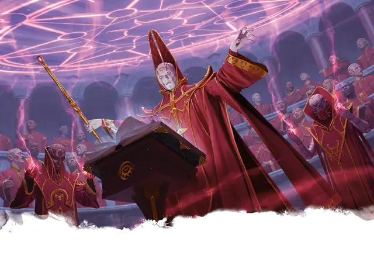

Маг
Mage
Средний или Маленький Гуманоид (Волшебник), Нейтральный

Класс Защиты 15 Инициатива +2 (12)
Хиты 81 (18к8)
Скорость 30 футов
| мод | спас | ||
|---|---|---|---|
| СИЛ | 9 | −1 | −1 |
| ЛОВ | 14 | +2 | +2 |
| ТЕЛ | 11 | +0 | +0 |
| мод | спас | ||
|---|---|---|---|
| ИНТ | 17 | +3 | +6 |
| МДР | 12 | +1 | +4 |
| ХАР | 11 | +0 | +0 |
Чувства пассивное Восприятие 14
Языки Общий
Опасность 6 (2 300 опыта; БВ +3)
Действия
Мультиатака. Маг совершает три атаки Волшебным вплеском.
Волшебный всплеск. Бросок рукопашной или дальнобойной атаки: +6, досягаемость 5 фт. или дистанция 120 фт. Попадание: 16 (3к8 + 3) Силового урона.
Сотворение заклинаний. Маг сотворяет одно из следующих заклинаний (заклинательная характеристика — Интеллект, Сл спасброска заклинаний 14):
Неограниченно: Волшебная рука, Доспехи мага, КЗ, Обнаружение магии, Свет, Фокусы
2/день каждое: Невидимость, Огненный шар, версия 4-го уровня
1/день каждое: Конус холода, Полёт
Бонусные действия
Туманный шаг (3/день). Маг сотворяет Туманный шаг (заклинательная характеристика — та же, что для Сотворения заклинаний).
Реакции
Защитная магия (3/день). Маг сотворяет Контрзаклинание или Щит в ответ на условие этого заклинания (заклинательная характеристика — та же, что для Сотворения заклинаний).
Бонус мастерства +3
Среда обитания Любая
Сокровища Личные, Магические
Маги
Маги — это заклинатели и творцы чудес всех мастей от властелинов-волшебников до затворниц-ведьм. Они изучают мистические тайны и обладают глубокими познаниями о чудовищах, легендах, знамениях и прочих премудростях. Маги часто привлекают союзников или нанимают помощников, чтобы те помогали им в изысканиях или обретении магического могущества.
Совершите бросок по таблице «Разновидности магов» для вдохновения или выберите сами подходящий тип мага.
Разновидности магов
| 1к10 | Маг — это… |
| 1 | Взывающий за магией ко звёздам астроном. |
| 2 | Сочинитель оккультных манускриптов. |
| 3 | Инженер — изобретатель магических диковинок. |
| 4 | Толкующий предзнаменования оракул. |
| 5 | Юный талант с наследственным волшебным даром. |
| 6 | Псионик, чьи заклинания — психические силы. |
| 7 | Исследующий древние загадки учёный. |
| 8 | Придворный прорицатель у престола владыки. |
| 9 | Поддерживающий войска боевой колдун. |
| 10 | Ведающая тайные премудрости ведьма. |
Маги — это состоявшиеся заклинатели, чьи жизни пронизаны магией. Они могут использовать свои силы для защиты или подчинения других существ, а могут посвятить себя исследованиям и разгадке мистических тайн.